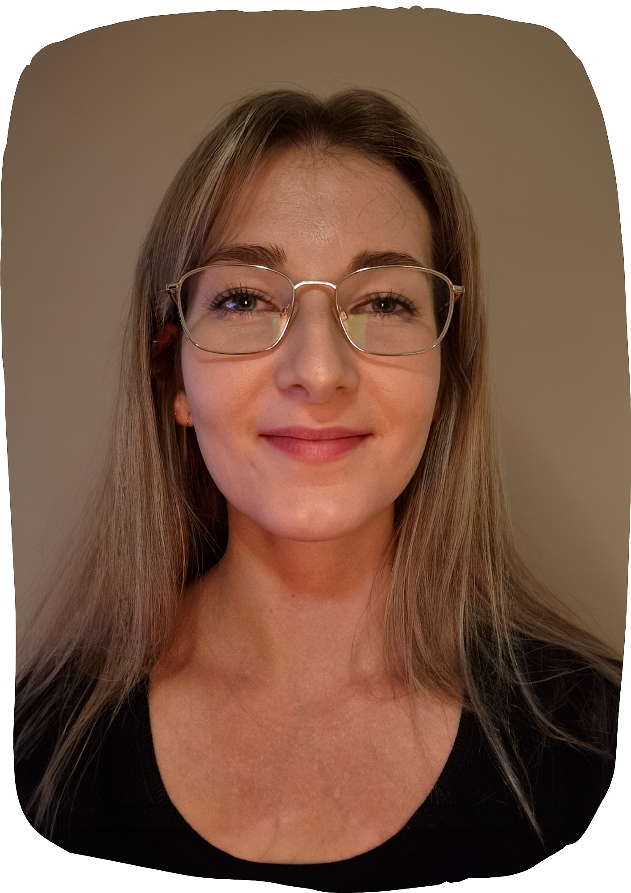

Om meg

Som interaksjonsdesigner elsker jeg å lage brukervennlige opplevelser og løsninger som betyr noe for folk. Jeg liker å jobbe med både digitale og fysiske prototyper, og blir motivert av å kunne være kreativ, å gjøre ideer om til virkelighet.
Bakgrunnen min i pedagogikk har gitt meg en dyp forståelse for mennesker og læring, og den kombinerer jeg med en interesse for teknologi og design. Mitt mål er å skape løsninger som møter behovene til både kunder og brukere.
Designferdigheter
Programvare
Annet
Relevant erfaring
Design Explore 2026
Januar 2026
To dager sentrert rundt tverrfaglig sparring og praktisk bruk av designmetodikk. Vi jobbet med en case for Gjensidige om hvordan Al kan brukes i løsningene deres. Ved å bruke spekulativ design fikk vi sett på problemstillingen fra helt nye vinkler. Vi fikk også innsikt i PwC sine egne prosjekter, før vi til slutt presenterte løsningen vår for oppdragsgiver!
Salt & Pepper Gjøvik
UX-Designer • Nov 2025 – nå
Redesignet nettsiden, hvor jeg også hadde ansvar for design og implementering i WordPress.
Luna Restaurant
UX-Designer • Aug 2025 – nå
Jeg designet en ny nettside for en nyoppstartet restaurant, der jeg hadde ansvar for design og implementering i WordPress. Målet var å skape en enkel opplevelse for brukerne, med et design som gjenspeiler restaurantens personlighet og atmosfære.
Norkart avd. Lillehammer
Produktdesigner • Sommer 2025
Jobbet i tverrfaglig team som utviklet et varslingssenter for Norkart Sommer. Gjennomførte intervjuer og hadde ansvar for konseptutvikling, design og brukertesting. Presenterte løsninger og innsikter for å sikre en brukersentrert løsning.
Myrsund Mekaniske AS
UX-Designer • Nov 2024 - nå
Designe og utviklet nettsiden, og har løpende ansvar for oppdatering og vedlikehold av nettstedet.
Utdanning
NTNU
Bachelor i Interaksjonsdesign • Aug 2022 – Jun 2026
Valgfag med fokus på tilgjengelighet, brukervennlighet og etikk
NTNU
Bachelor i Pedagogikk • Aug 2020 – Jun 2022
Inkluderer ett års spesialisering i internasjonal markedsføring som en del av et breddeår